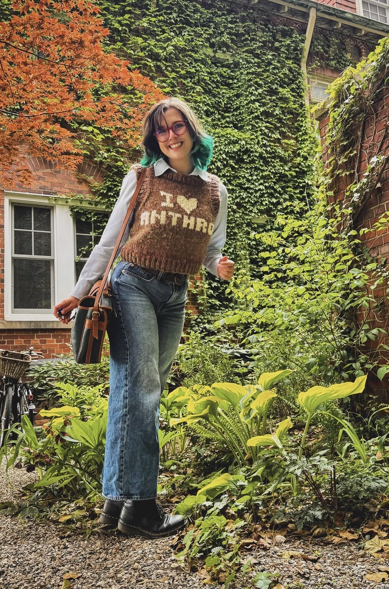
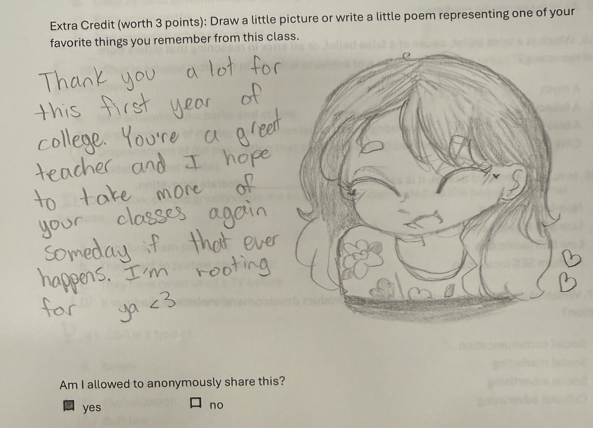
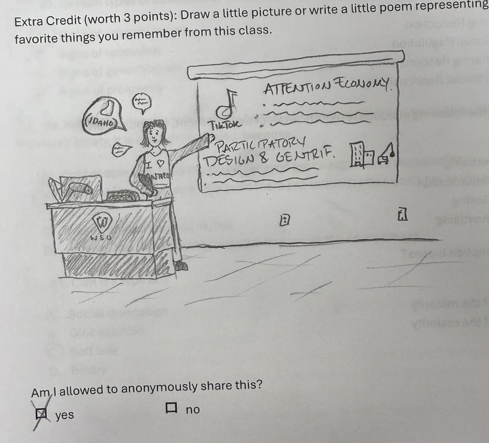
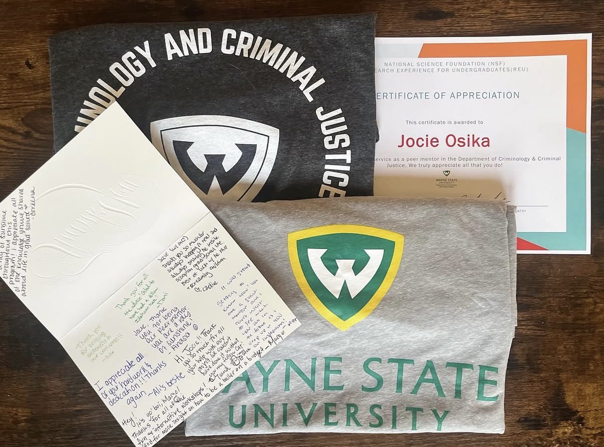

Ph.D. Candidate, Anthropology
ABD and available for hire
jocieosika@wayne.edu
These are courses for which I designed the syllabus, created all course materials, including lectures, assignments, and tests, delivered all lectures, and completed all grading independently. I enjoy teaching, and I greatly value the opportunity to impact my students' education and lives. My student feedback reflects success in this endeavor; my students enjoy my energetic, personable, and caring approach to teaching.

"I am going to walk away from this Anthropology different from when I started this class. This class makes me want to dedicate more, push myself harder than ever before because somewhere in the world there is someone who will do everything for certain opportunities! For me, that's motivation! That's make me value things more, have different outlook on things that for me would be normal. Challenge myself to create different norms from what has always been my culture. I guess this is why everyone should have a little insight on the anthropology way of thinking. It honestly just makes me want to know more, see more and be more." -First generation Business Anthropology student, Fall 2022
"Jocie completely changed my perspective on business anthropology. Before taking this course I was not interested in the subject at all but her ability to present things in a way that was interesting and relatable to a lot of the students was encouraging and made the subject more interesting to study." -Anonymous Student Evaluation of Teaching, Business Anthropology Fall 2022
"I just want to say that I genuinely enjoyed taking your class. I actually looked forward to the lectures, unlike my other major required classes. You are actually so good at teaching. You are really funny too which makes me pay attention to the lecture. I think your unique personality and humor appeals to students. Your class felt like a friend talking about fun stuff rather than a serious class taught by a professor. Overall, your class reminded me of the school days when learning used to actually be fun." -Anonymous Student Evaluation of Teaching, Introduction to Anthropology Winter 2025

"Professor Osika is a very personable and well educated individual with so much knowledge in not only this content, but also relating content as well. She made everyone including myself feel welcome and accepted in the classroom. She would also respond to emails quickly." -Anonymous Student Evaluation of Teaching, Business Anthropology Winter 2025
"The course was very interesting. I felt like I learned a lot that I needed to know before going out into the workplace. It is definitely information that people need to learn. I loved having this professor. I enjoyed coming to class mostly based on how she taught. She made me actually want to learn the material and listen to her while she was teaching." -Anonymous Student Evaluation of Teaching, Business Anthropology Fall 2023

"She is capable of making complicated ideas both comprehensible and interesting, and I found myself looking forward to her class each week. Professor Osika differs due to the extreme dedication she attaches to her students." -Business Anthropology Student, Fall 2023
"Jocie possesses an uncommon collection of traits that make her uniquely qualified as a professor. She is influential, engaging, passionate, meticulously ethical, and most importantly, she demonstrates strong leadership skills. The time I had in her class was a joy, and one thing that was abundantly clear to me was that my peers felt the same. It is commonly said that you are who you associate with, and I am proud to carry forward a bit of Jocie Osika with me. Many of her lessons have stuck with me, shaping what I envision for my future, and it cannot be overstated the impact she has had on myself, and undoubtedly others at this university. It is also said that academia is built on the shoulders of giants, and while only time will tell if Jocie is a giant herself, she is most certainly giantlike." -Nontraditional retired veteran Business Anthropology student, Winter 2024
I have always been interested in compassionate leadership, and that extends to opportunities to mentor others and participate in service in academia.

.